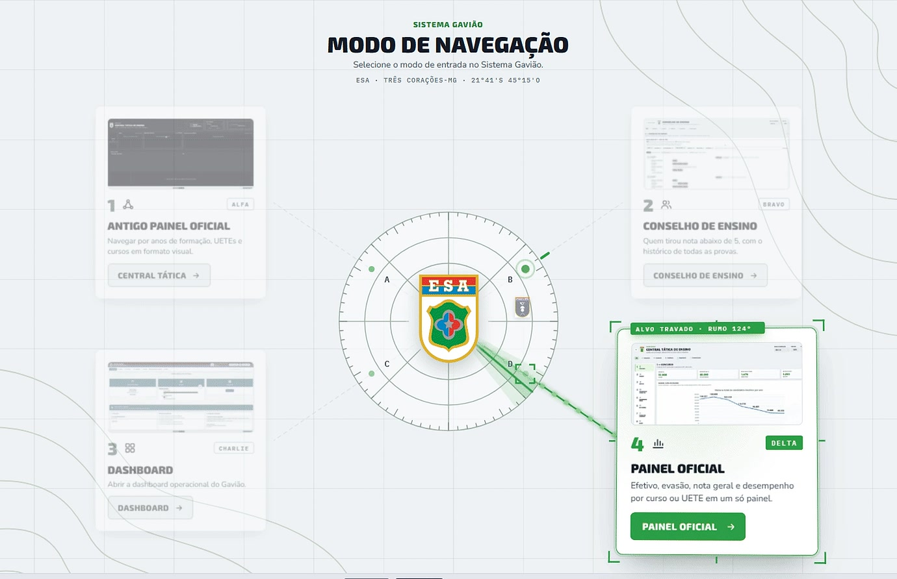
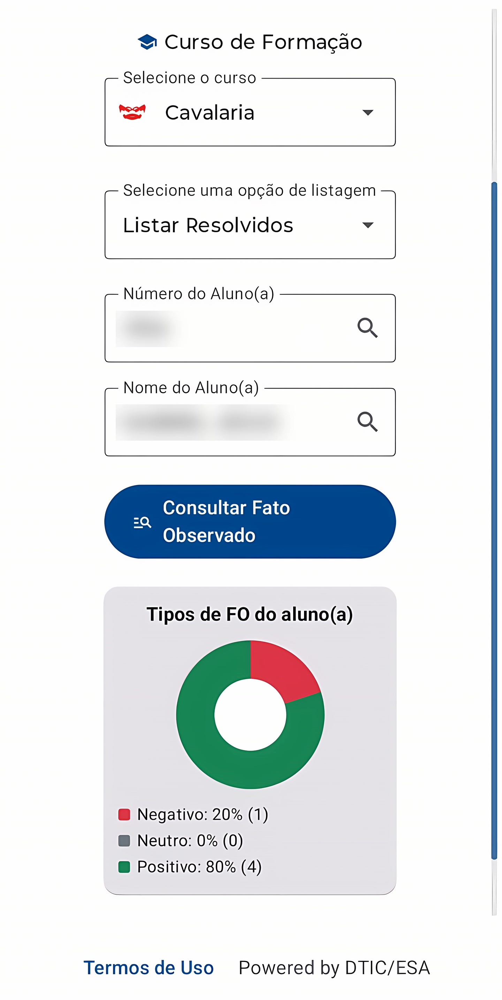
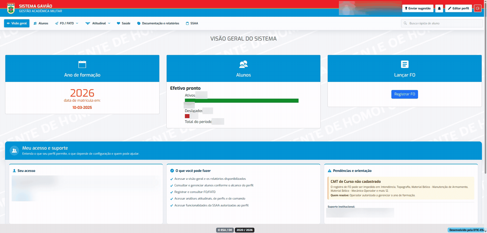
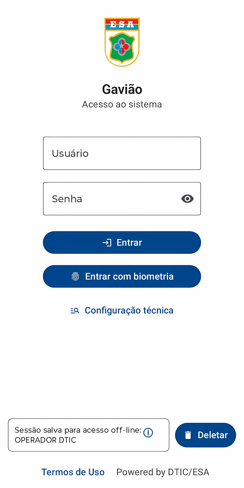
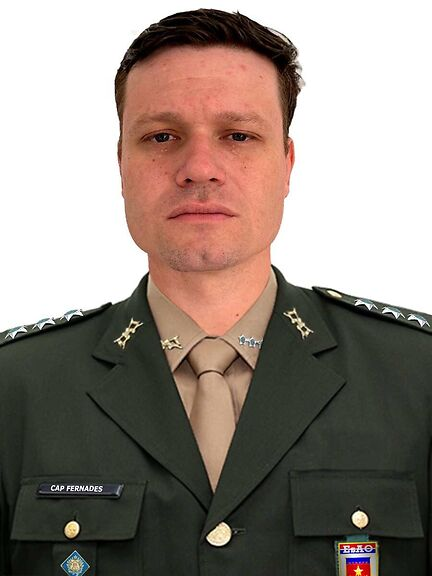
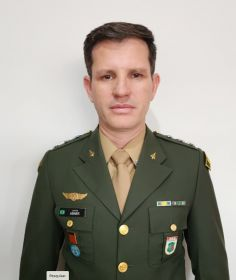

Ciclo de Formação
Importação dos aprovados no concurso, matrícula por ano de formação, passagem do Básico para a Qualificação, reintegração e situações diversas (trancamento e desligamento, a pedido ou ex officio).
O Atalaia cuida do 1º ano em 13 UETEs de nove estados. O Gavião assume o 2º ano na Escola de Sargentos das Armas, já dentro de cada arma. Do resultado do concurso à escolha da especialidade, com painel para o comando e app Android que registra FO sem rede.


A entrada no sistema do jeito que o usuário vê: a vinheta da Escola de Sargentos das Armas, o login e a escolha do modo de navegação, com o radar travando a mira em cada módulo.
O aprovado no concurso passa dois anos em formação, em dois lugares. O 1º ano (Período Básico) acontece em uma das 13 UETEs, de Alegrete (RS) a Fortaleza (CE), e roda no Atalaia. No 2º ano (Período de Qualificação) o aluno chega à ESA, em Três Corações (MG), e passa para o Gavião.
Os dois sistemas dividem a mesma base de código, as regras e os perfis de acesso. As avaliações da qualificação ficam num banco próprio, o SSAA, separado da base administrativa.
O código completo e os dados permanecem no repositório institucional privado. Este portfólio mostra o que o sistema faz e como foi construído.
Atalaia1º ano do CFGS · Período Básico
O Atalaia roda em todas as Unidades Escolares Tecnológicas do Exército que formam o 1º ano do CFGS, do Rio Grande do Sul ao Ceará. Cada UETE matricula, avalia e acompanha os seus alunos no mesmo sistema, e a Escola enxerga a turma inteira de uma vez, até a escolha da especialidade que define a arma de cada um.

Gavião2º ano do CFGS · ESA
No Gavião ficam o calendário de provas e o lançamento de graus da qualificação, a avaliação atitudinal, a disciplina e o painel que o comando usa para ler a turma. Telas reais, capturadas na homologação com usuário de teste.


Também no Gavião: a apresentação em 43 segundos, o Painel Oficial do Diretor e o app Gavião FO.
Seis frentes de produto, cada uma com as telas, as regras e os relatórios que antes viviam em planilhas e papel.
Importação dos aprovados no concurso, matrícula por ano de formação, passagem do Básico para a Qualificação, reintegração e situações diversas (trancamento e desligamento, a pedido ou ex officio).
Calendário de provas, lançamento de graus com 2ª chamada, índice de dificuldade por questão, recuperação e demonstrativo de notas com três casas decimais. O TFM entra na média, com bônus para atletas.
Painel Oficial do Diretor com efetivo e evasão, desempenho cognitivo, físico e atitudinal, função de comando e concurso, sempre com a série dos últimos cinco ciclos para comparação.
Fato Observado (FO) positivo, neutro ou negativo, convertido em FATD quando cabe e arquivado na FRAD e na ROD. Encaminhamento em lote, aviso ao sargenteante e estatística por aluno e por observador.
Distribuição das vagas de cada Qualificação Militar de Sargentos pela classificação decrescente dos alunos e pelas prioridades que cada um indicou, com relatório final exportado para planilha.
App Android Gavião FO: o observador registra o Fato Observado no campo, sem rede, e o envio acontece sozinho quando a conexão volta.
O Painel Oficial do Diretor é a tela em que o comando da Escola lê a turma. Os tópicos seguem a mesma estrutura: faixas coloridas no alto, gráficos no meio e a grade por arma embaixo.
Um aluno com nota muito baixa não arrasta o retrato da turma inteira.
Cursos de tamanhos diferentes são comparados em %, nunca em contagem crua.
Crítico, atenção, adequado e alto desempenho têm sempre a mesma cor, em qualquer tela e em qualquer arma.
Barra, fatia ou cartão: um clique mostra os alunos que formam aquele número, com a ficha de cada um.
Os totais são conferidos contra o efetivo oficial do ciclo. Nota não lançada aparece como "não avaliado", nunca como zero.
Inscritos por estado e mesorregião do IBGE, com as faixas de cor calculadas por quebras naturais (Jenks) e desenhadas em D3.js.

Instrução acontece no campo, onde a rede falha. O app Gavião FO guarda no aparelho os alunos que o observador pode ver, registra o Fato Observado sem conexão e sincroniza com o Gavião por uma API móvel dedicada.
Biometria forte para abrir offline, identificador único em cada registro pendente e escrita bloqueada quando o app aponta para a homologação.
A rede interna bloqueia CDN, então bibliotecas, fontes e mapas são servidos pelo próprio sistema.
Cada quadrado é uma semana de commits no repositório. Até 2025 o Gavião avançava aos poucos, em semanas soltas ao longo do ano. Em março de 2026 o COP Educação passou a ter uma equipe dedicada ao projeto, e o ritmo mudou.
Commits sem merges, agregados por semana a partir do histórico do repositório privado. Commits automáticos de dependências ficam de fora. Nenhuma mensagem, código ou dado de autor é publicado. Atualizado em .
COP Educação: gestão, desenvolvimento, dados e design trabalhando de forma integrada para transformar necessidades em soluções.
Coordenação

Coordenador do Projeto
Define as prioridades da equipe e leva as necessidades do ensino para dentro do sistema.

Relações Institucionais
Faz a ponte do projeto com o comando e os demais setores da Escola.
Desenvolvimento

Gestor do Desenvolvimento

Desenvolvimento e Ciência de Dados

Desenvolvimento
Equipe apresentada no painel público do COP Educação. Imagens utilizadas com autorização para este portfólio.
Regra de negócio militar traduzida em consulta, tela e teste.
Explorar os exemplosUm único seletor de ano de formação e um de UETE/curso, com a mesma fonte de dados em todas as telas.
Perfis e permissões conferidos no backend. Esconder o botão não basta.
Banco cifrado no aparelho, fila local e retomada automática do envio.
Pacote por PR com manifesto SHA-256 e backup do que muda. Script SQL sempre aplicado à mão.
O conteúdo público inclui documentação e exemplos demonstrativos escritos para este repositório, além de capturas de tela do ambiente de homologação feitas com usuário de teste, sem dados de alunos. Do histórico de commits, só a contagem por semana entra no mapa de atividade.
Não são públicos: o código completo, o histórico institucional, credenciais, dados pessoais, configurações internas e dados de produção.